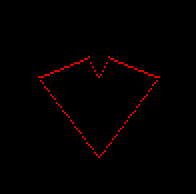
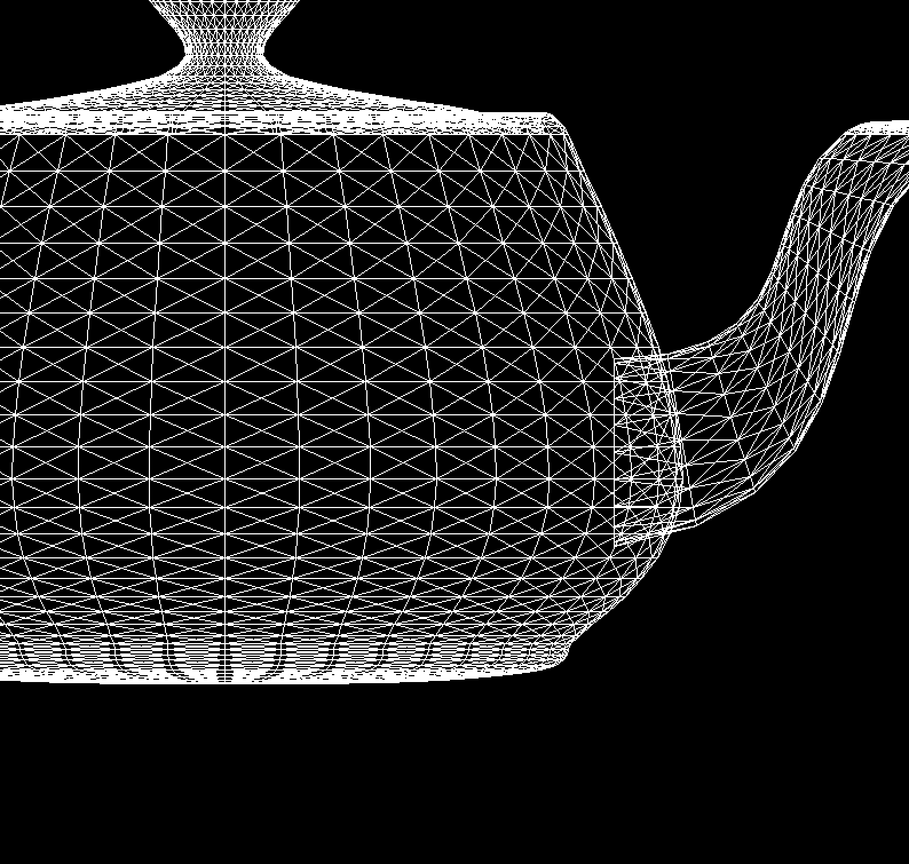
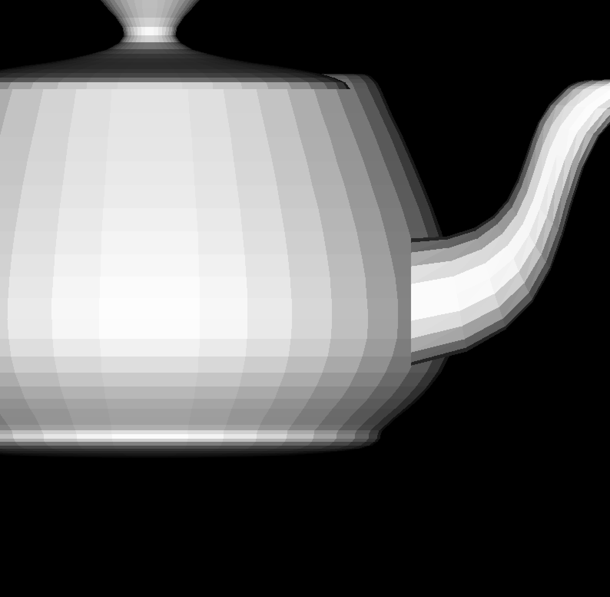

Progress: Halfway Done(I think)
3D Renderer
Recentally I have delved into the field of computer graphics and wanting to have a better understanding of the core components that go on under the hood of a graphics API such as OpenGl or DirectX I have decided to build my own 3D Renderer.
I'm currently using Real-Time Rendering and tinyrenderer guide as reference while I build the project from the ground up using C.
Heart before I implemented Bresenhams Line Algorithm
To start the project off I used the same strategy from the tinyrenderer guide of reading and writing to a TGA file format. This involved building my own library to be able to read, write, create, and manipulate TGA files. Currently the library is 90% finished however does not support all the functionalities that are available within TGA header options to save focuse for the main goal of the project. With this library it opened up the capabilities of drawing to a image format with code. A simple test was run encapsilating all functionality by creating an image drawing a triangle and saving/writing it to disk.
Utah Teapot loaded in with OBJ library
The next step in the project was utilizing OBJ files to load in models. I would create my own library to parse object files into a datastructure I would use to draw each set of vertices or face to the screen. I also improved the triangle algorithm to fill the triangle with the specifed color using the bacyrentric coordiante system. With the new triangle algorithm I created a simple light source pointing at the model and calculated the intensity of the light on each face with the normal of the triangle and the direction of the light source.
Utah Teapot no z-buffer
As you can see by the spout of the teapot the current state of the renderer did not have a z-buffer or painters algorithm implemented, so I used the references I had to implement a z-buffer. The z-buffer keeps track of each pixel on the screen and compares to see which one is the nearest to the camera.

Utah Teapot z-buffer

Github
Jan 17, 2025